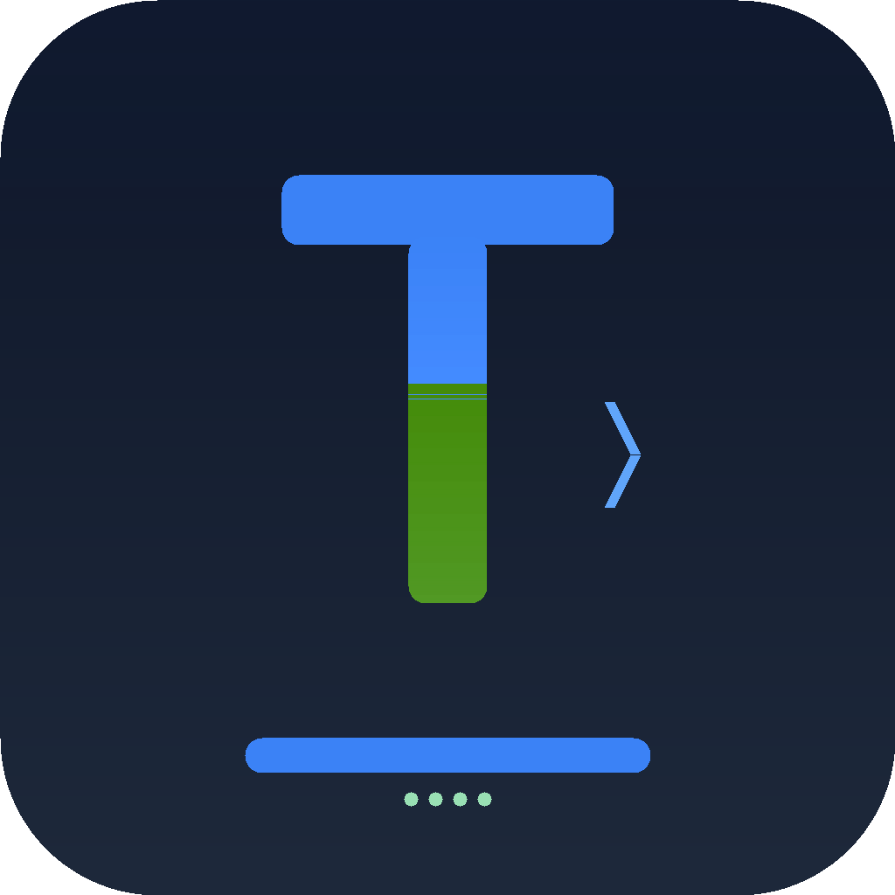

사내 스윙 SSO와 사번 기반 사용자 식별
TECHAI CODE · internal AI coding agent
TECHAICODE
터미널과 VS Code에서 쓰는
사내 AI 개발 에이전트
TerminalVS Code Extension
Live URLtechaicode.vercel.app

Terminal — command
$techai
터미널과 VS Code에서 쓰는
사내 AI 개발 에이전트

 $ techai
$ techai
Terminal과 VS Code Extension, 두 제품 모두 같은 엔진을 씁니다.
프로젝트 루트에서 바로 실행되는 개발자용 AI 에이전트
VS Code Extension과 같은 엔진, 같은 도구 실행 루프 사용

프로젝트를 읽고, 파일·Shell·git 도구를 호출하며, 수정과 검증 루프까지 이어갑니다.
관련 파일과 심볼 탐색
수정 대상과 주변 맥락 읽기
안전한 라인 기반 편집
테스트·빌드·git 확인
“파일 찾아줘”에서 끝나는 게 아니라, 직접 수정하고 확인하는 루프까지 갑니다.
프로젝트 루트에서 바로 실행. 셸·git·파일 작업과 잘 붙습니다.
에디터 안에서 같은 로컬 서버와 도구 실행 루프를 씁니다.
기존 화면과 요구사항 정리
 구조 분석
구조 분석React 프로젝트 흐름 파악
 코드 수정
코드 수정회원가입·검색·주문 플로우 구현
“복잡한 프로젝트 구조를 처음 보는 사람도 AI 도움으로 빠르게 화면과 흐름을 이해할 수 있음”
“단순 목업이 아니라 실제 업무 플로우에 맞춰 동작하는 화면 코드까지 구현”